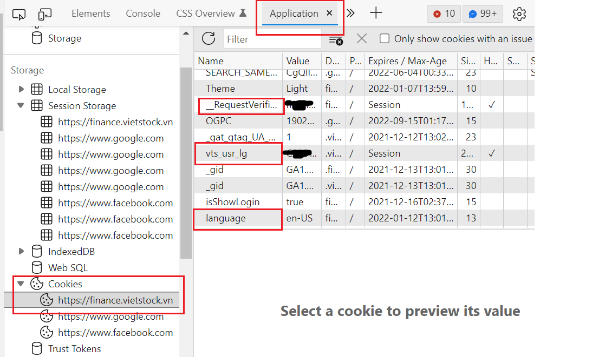

Welcome to Vietnam Stock Data Package
This package bringing an easy way to access to Vietnam Stock data.
Installation
Easy install via pip
pip install git+https://github.com/vuthanhdatt/vnstock-data-python.git
User can also install a specific version
pip install git+https://github.com/vuthanhdatt/vnstock-data-python.git@version_name
Example:
pip install git+https://github.com/vuthanhdatt/vnstock-data-python.git@v.0.1
Or using git
git clone https://github.com/vuthanhdatt/vnstock-data-python.git
With specific version
git clone -b brach_name https://github.com/vuthanhdatt/vnstock-data-python.git
Usage
In order to use this package, user need obtain Vietstock cookies. Here's instruction how to obtain it.
- Go to Vietstock finance
- Log in to website, if you don't have account, register one.
- Press
F12, go to tab Application - Choose Cookies with
https://finance.vietstock.vn/url

There are 3 value we need to take, vts_usr_lg, __RequestVerificationToken, language. Store these value in a dict, for example:
COOKIES={"vts_usr_lg":"ABCDEF","language": "en-US","__RequestVerificationToken":"GhijKL"}
Now, you can using this cookies to access data with this package.
Example
After installation, user can import package into .py file. For example, user can get price history of company with this code below:
from vnstock_data.all_exchange import VnStock
COOKIES={"vts_usr_lg":"ABCDEF","language": "en-US","__RequestVerificationToken":"GhijKL"}
vndata = VnStock(COOKIES)
vndata.price('FTS', '02-05-2021','11-05-2021')
>>> High Low Open Close Volume Adj Close Average High-Low
Date
2021-11-05 74000 69500 73500 71200 941700 71200 71833 4500
2021-11-04 75000 70500 70500 73300 955800 73300 72710 4500
2021-11-03 72000 68300 68300 70500 1334000 70500 70361 3700
2021-11-02 68500 66600 67000 68000 1293500 68000 67503 1900
2021-11-01 66300 62000 62700 66300 1389900 66300 64771 4300
... ... ... ... ... ... ... ... ...
2021-02-18 17200 16650 16900 16800 533700 15000 16912 550
2021-02-17 16800 16150 16400 16800 563900 15000 16444 650
2021-02-09 16100 15500 15700 15900 382000 14200 15830 600
2021-02-08 16500 15400 16400 15700 590500 14000 16088 1100
2021-02-05 16500 16000 16150 16350 258000 14600 16248 500
Or user can get market index:
from vnstock_data.hose import Hose
hose = Hose(COOKIES)
hose.market_index('02-05-2021','11-05-2021')
>>> PreClose Open Close High Low Change(%) Volume MarketCap
Date
2021-11-05 1448.34 1450.71 1456.51 1459.49 1444.51 0.56 874070856 5.648438e+09
2021-11-04 1444.30 1442.89 1448.34 1451.98 1435.84 0.28 929526879 5.616765e+09
2021-11-03 1452.46 1460.44 1444.30 1463.63 1444.30 -0.56 1505103001 5.597664e+09
2021-11-02 1438.97 1439.61 1452.46 1452.46 1438.83 0.94 1009457944 5.625759e+09
2021-11-01 1444.27 1449.32 1438.97 1451.81 1435.57 -0.37 1132355594 5.573175e+09
... ... ... ... ... ... ... ... ...
2021-02-18 1155.78 1157.10 1174.38 1174.38 1148.66 1.61 614819219 4.424568e+09
2021-02-17 1114.93 1127.46 1155.78 1151.54 1127.46 3.66 507695043 4.355273e+09
2021-02-09 1083.18 1090.88 1114.93 1114.93 1078.98 2.93 519814193 4.201332e+09
2021-02-08 1126.91 1127.06 1083.18 1127.06 1075.10 -3.88 696599614 4.078789e+09
2021-02-05 1112.19 1114.79 1126.91 1126.91 1112.19 1.32 529870404 4.243698e+09